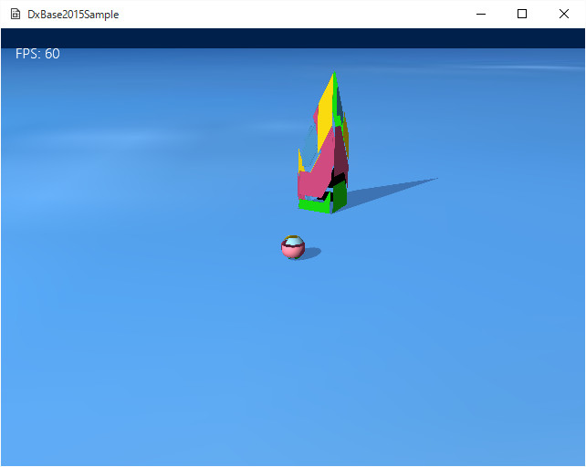

図4005a
ここではサンプル402で紹介したような直方体のオブジェクトがあり、上部の面が形状が変化します。このようなオブジェクトを作成するためには、独自のメッシュリソースを作成する必要があります。
void CustomDrawBox::CreateMeshResource(){
vector<VertexPositionNormalTexture> vertices;
vector<uint16_t> indices;
//Face数は6
const int FaceCount = 6;
static const Vector3 faceNormals[FaceCount] =
{
{ 0, 0, 1 },
{ 0, 0, -1 },
{ 1, 0, 0 },
{ -1, 0, 0 },
{ 0, 1, 0 },
{ 0, -1, 0 },
};
static const Vector2 textureCoordinates[4] =
{
{ 1, 0 },
{ 1, 1 },
{ 0, 1 },
{ 0, 0 },
};
//１辺の長さはの半分は0.5
float size = 0.5f;
for (int i = 0; i < FaceCount; i++)
{
//法線
auto normal = faceNormals[i];
auto basis = (i >= 4) ? Vector3(0, 0, 1) : Vector3(0, 1, 0);
auto side1 = Vector3EX::Cross(normal, basis);
auto side2 = Vector3EX::Cross(normal, side1);
//インデックスの登録
size_t vbase = vertices.size();
indices.push_back((uint16_t)vbase + 0);
indices.push_back((uint16_t)vbase + 1);
indices.push_back((uint16_t)vbase + 2);
indices.push_back((uint16_t)vbase + 0);
indices.push_back((uint16_t)vbase + 2);
indices.push_back((uint16_t)vbase + 3);
//頂点の登録
vertices.push_back(
VertexPositionNormalTexture(
(normal - side1 - side2) * size, normal, textureCoordinates[0])
);
vertices.push_back(
VertexPositionNormalTexture(
(normal - side1 + side2) * size, normal, textureCoordinates[1])
);
vertices.push_back(
VertexPositionNormalTexture(
(normal + side1 + side2) * size, normal, textureCoordinates[2])
);
vertices.push_back(
VertexPositionNormalTexture(
(normal + side1 - side2) * size, normal, textureCoordinates[3])
);
}
//RHからLHに変更
if ((indices.size() % 3) != 0){
throw BaseException(
L"インデックスの数が合いません",
L"if((indices.size() % 3) == 0)",
L"CustomDrawBox::CreateMeshResource()"
);
}
for (auto it = indices.begin(); it != indices.end(); it += 3)
{
std::swap(*it, *(it + 2));
}
for (auto it = vertices.begin(); it != vertices.end(); ++it)
{
it->textureCoordinate.x = (1.f - it->textureCoordinate.x);
}
//頂点とインデックスの配列からメッシュリソースを作成（頂点を変更できる）
m_MeshResource = CommonMeshResource::CreateCommonMeshResource(vertices, indices,true);
}
//頂点とインデックスの配列からメッシュリソースを作成（頂点を変更できる）
m_MeshResource = CommonMeshResource::CreateCommonMeshResource(vertices, indices,true);
void CustomDrawBox::UpdateMeshResource(){
//中略
//頂点バッファをリソースから取り出す
auto pVertexBuffer = m_MeshResource->GetVertexBuffer().Get();
//バックアップの頂点を取り出す
vector<VertexPositionNormalTexture>& BacukVertices = m_MeshResource->GetBackupVertices();
//D3D11_MAP_WRITE_DISCARDは重要。この処理により、GPUに邪魔されない
D3D11_MAP mapType = D3D11_MAP_WRITE_DISCARD;
D3D11_MAPPED_SUBRESOURCE mappedBuffer;
//頂点のマップ
if (FAILED(pID3D11DeviceContext->Map(pVertexBuffer, 0, mapType, 0, &mappedBuffer))){
// Map失敗
throw BaseException(
L"頂点のMapに失敗しました。",
L"if(FAILED(pID3D11DeviceContext->Map()))",
L"CustomDrawBox::UpdateMeshResource()"
);
}
//頂点の変更
VertexPositionNormalTexture* vertices = (VertexPositionNormalTexture*)mappedBuffer.pData;
for (size_t i = 0; i < m_MeshResource->GetNumVertices(); i++){
Vector3 Pos = BacukVertices[i].position;
if (Pos.x > 0 && Pos.y > 0 && Pos.z > 0){
//サインを使っていったり来たりするようにする
Pos.y += sin(m_TotalTime);
}
else if (Pos.x < 0 && Pos.y > 0 && Pos.z < 0){
//サインを使っていったり来たりするようにする
Pos.y -= sin(m_TotalTime);
}
vertices[i] = VertexPositionNormalTexture(
Pos,
BacukVertices[i].normal,
BacukVertices[i].textureCoordinate
);
}
//アンマップ
pID3D11DeviceContext->Unmap(pVertexBuffer, 0);
}
void CustomDrawBox::CreateMeshResource(){
vector<VertexPositionNormalTexture> vertices;
vector<uint16_t> indices;
//Cubeの作成(ヘルパー関数を利用)
VertexUtil::CreateCube(1.0f, vertices, indices);
//この段階でverticesとindicesにはCubeのデータが入る
//頂点とインデックスの配列からメッシュリソースを作成（頂点を変更できる）
m_MeshResource = CommonMeshResource::CreateCommonMeshResource(vertices, indices, true);
}